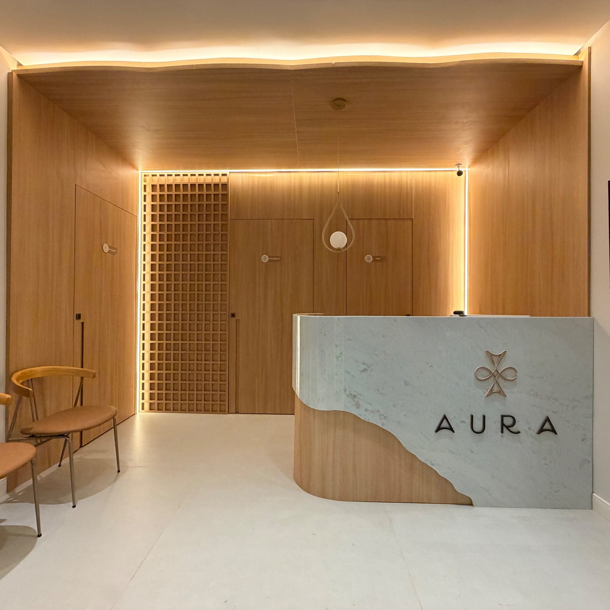
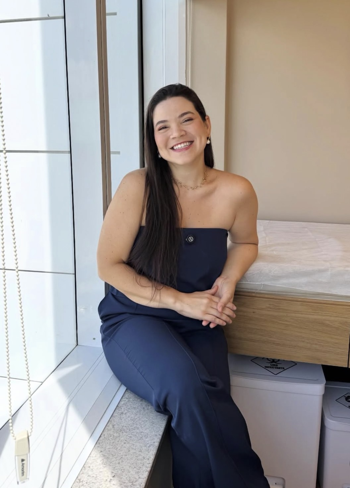
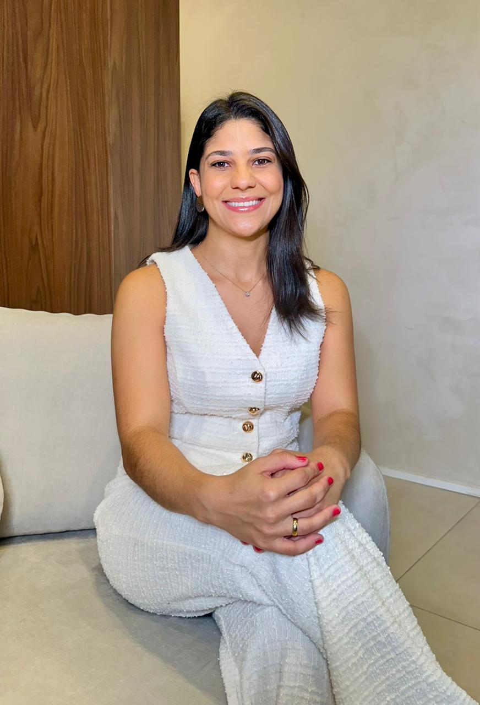

Pontualidade
Seu horário respeitado, sem esperas desnecessárias.

Clínica Aura · Feira de Santana · BA
Excelência médica em um ambiente
que cuida de você.
Na Clínica Aura, cada detalhe foi pensado para oferecer diagnósticos precisos, atendimento humanizado e uma experiência de saúde de alto nível em Feira de Santana.
Quatro princípios que sustentam cada consulta, exame e procedimento realizado em nossa clínica.
Seu horário respeitado, sem esperas desnecessárias.
Cada paciente é único e merece atenção completa.
Estrutura moderna, acolhedora e sofisticada.
Profissionais altamente qualificados, referências na Bahia.
Três áreas de atuação, conduzidas por especialistas reconhecidos no estado da Bahia.
Diagnóstico por imagem com precisão e tecnologia de ponta. Realizamos ultrassonografia abdominal, pélvica, transvaginal, obstétrica, de partes moles e doppler vascular em Feira de Santana.
Saúde feminina em todas as fases da vida. Consultas, colposcopia, patologia do trato genital inferior, ginecologia endócrina e ginecologia infanto-juvenil em Feira de Santana.
Expertise cirúrgica com segurança e resultados de excelência. Tratamento de hiperidrose (suor excessivo), derrame pleural, oncologia torácica e doenças da pleura em Feira de Santana.
Conheça os médicos especialistas da Clínica Aura em Feira de Santana.



A Clínica Aura nasceu com um propósito claro: oferecer medicina especializada em Feira de Santana em um ambiente que respeita, acolhe e transforma.
Reunimos profissionais de excelência em um espaço projetado para que cada visita seja uma experiência de cuidado verdadeiro, do diagnóstico ao acompanhamento.

Tire suas dúvidas sobre nossas especialidades e o funcionamento da Clínica Aura em Feira de Santana.
Avaliações reais de pacientes atendidos em Feira de Santana.
Aguardando o primeiro depoimento de paciente — espaço reservado após inauguração.
Ver no Google →Aguardando o primeiro depoimento de paciente — espaço reservado após inauguração.
Ver no Google →Aguardando o primeiro depoimento de paciente — espaço reservado após inauguração.
Ver no Google →Aguardando o primeiro depoimento de paciente — espaço reservado após inauguração.
Ver no Google →No coração de Feira de Santana, em um dos endereços mais nobres da cidade.